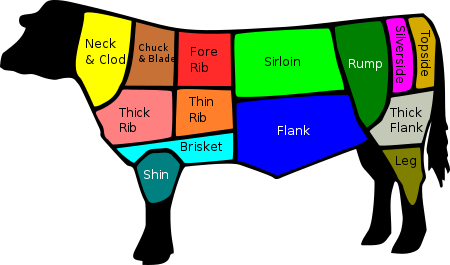
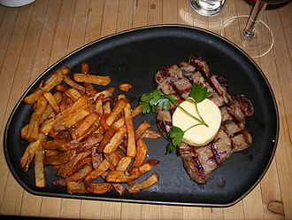
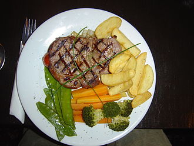
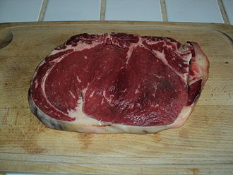

What is Sirloin?
Sirloin !
The sirloin steak is cut from the sirloin, the subprimal posterior to the short loin where the T-bone, porterhouse, and club steaks are cut. The sirloin is actually divided into several types of steak. The top sirloin is the most prized of these and is specifically marked for sale under that name. The bottom sirloin, which is less tender and much larger, is typically marked for sale simply as "sirloin steak". The bottom sirloin, in turn, connects to the sirloin tip roast.
In a common British, South African, and Australian butchery, the word sirloin refers to cuts of meat from the upper middle of the animal, similar to the American short loin, while the American sirloin is called the rump. Because of this difference in terminology, in these countries, the T-bone steak is regarded as a cut of the sirloin.

Etymology of Sirloin
The word sirloin derives from the Middle English surloine, itself derived from the Old French word surloigne (variant of surlonge), that is, sur for 'above' and longe for 'loin'. In Modern French, the cut of meat is called aloyau or faux-filet. A commonly-repeated anecdote claims that the name is derived from an occasion when King James I of England, while being entertained at Hoghton Tower during his return from Scotland in 1617, was so impressed by the quality of his steak that he knighted the loin of beef, which was referred to thereafter as "Sir loin". There is no reliable evidence for this explanation and scholars generally hold it to be a myth.
Dishes of Sirloin
- Sirloin steak, served with garlic butter and French fries
- A sirloin steak dinner
- A raw slice of French faux-filet
editor:Dongyang Mirae University 20202864 KIM MINJUN source:wikipedia/Sirloin_steak